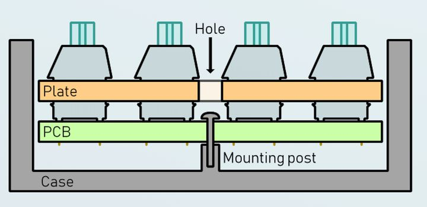
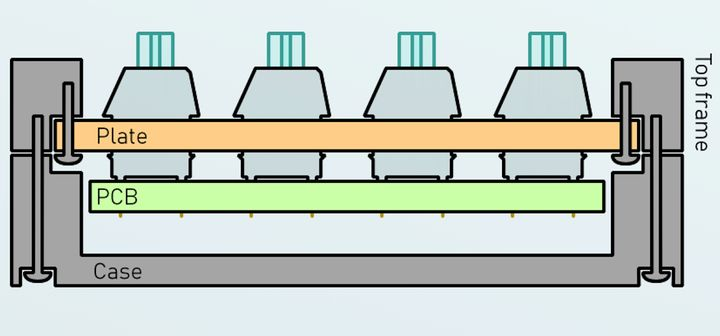
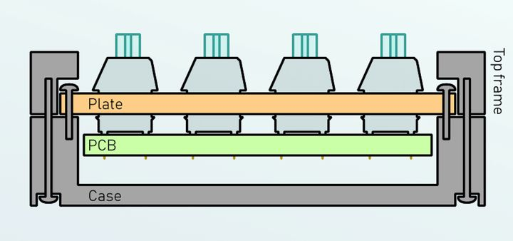
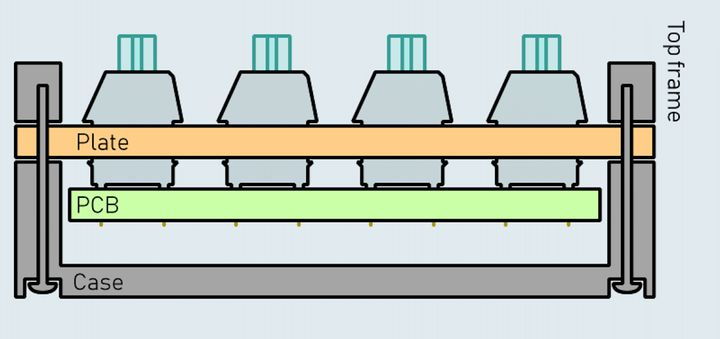
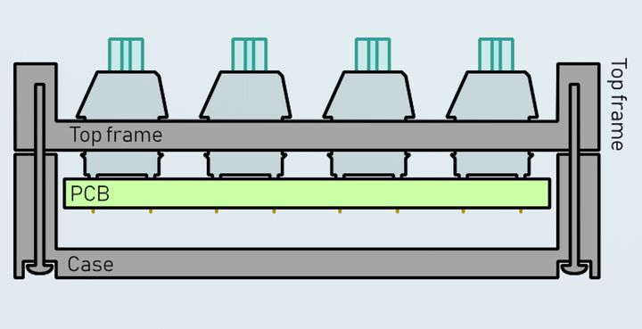
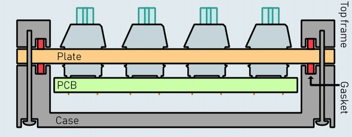
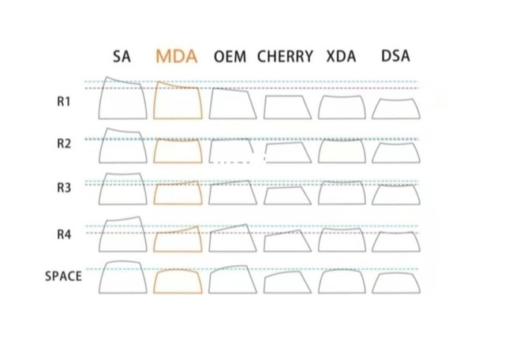

Keyboard
前言
键盘是程序员的主要生产工具之一
PCB(printed circuit board)
印制线路板由绝缘底板、连接导线和装配焊接电子元件的焊盘组成，具有导电线路和绝缘底板的双重作用，三模指有线连接、2.4G无线连接和蓝牙无线连接。
开发板
开发板（demo board）是用来进行嵌入式系统开发的电路板，包括中央处理器、存储器、输入设备、输出设备、数据通路/总线和外部资源接口等一系列硬件组件，比如，Arduino Leonardo
主控芯片
联系各个设备之间的桥梁，也是控制设备运行工作的大脑，比如，ATmega32u4
PCB与主机通信
- 接口：串行接口、并行接口
- 接口标准：支持的标准才能进行通信，比如，USB标准通常包括底层信号、电平定义、机械连接方式，还是数据格式、通信协议等。
固件
是指设备内部保存的设备“驱动程序”，通常包含通信标准等，比如，QMK 固件是一个基于tmk_keyboard的键盘固件。
驱动
硬件设备与使用它的程序之间指令的转换器，写在外设主控上的是固件，PC使用驱动与外设通信。
改键
QMK固件可以通过json文件、VIA软件进行改键
轴体
| 类型 | 按下 | 回弹 | 触发 | 优点 |
|---|---|---|---|---|
| 静电容键盘 | 硅胶碗 | 硅胶碗 | 电容 | 磨损小，声音小 |
| 薄膜键盘 | 硅胶碗 | 弹簧 | 印刷电路触点 | 中庸，剪刀脚结构增加手感 |
| 机械键盘 | 弹簧 | 弹簧 | 铜片 | 手感好 |
- 五脚轴较三脚轴多了两个固定轴上无钢板结构键盘。
- 段落轴较线性轴有节奏感但声音大
- 不同厂家轴体结构不同，手感也可能有区别
- 防尘轴就是加了一层包围，RGB轴即透光的轴，金触点提高寿命
机械轴
分类
光轴、矮轴、线性轴、段落轴
厂商
- CHERRY 樱桃：MX轴，MX矮轴
- Gateron 佳达隆：标准轴，G静音(添加了缓冲垫)，G光(替换传统的金属拨片为光学感应组件，延长寿命)，Gpro(出厂自润优化寿命)
- Kailh 凯华：标准轴，KS极速轴，Kpro轴，KBox轴(独有结构)，KChoc矮轴(轴体厚度减小)，KO轴(中心RGB)，KH轴(半高轴)
- TTC 正牌科电：标准轴，TTC金轴(金触点，提高寿命)，矮轴，面向客制化的轴
- OUTEMU 高特：标准轴，ICE轴(面向客制化)
结构
Tray mount
把内胆(定位板和PCB)固定在外壳上，相对比较不稳定。
- 因为刚性/实心结构比较少。
- 手感一致性差
- 螺钉孔需要有一定的高度，所以空腔声会比较大。

Case mount
把内胆(定位板和PCB)固定在底壳的底板上。
- Top frame mount：把定位板固定在上盖。成本手感适中。

- Bottom mount：内胆会被固定在底壳边缘。悬浮式外观，较硬

- Sandwich mount：将定位板牢牢固定在上盖和底壳之间。成本较高，手感较好。

- Integrated mount：上盖与定位板的一体设计。成本低，手感硬。

- Gasket mount：垫片结构，螺丝只串起外壳，定位板依靠两块外壳的压力夹在中间。成本高，手感好。

Plateless mount
无钢板设计，即没有定位板，对PCB开孔精度要求很高，而且一般不支持热插拔
键帽
材质
- ABS：工艺规整、细节精致、纹理均匀，容易打油
- PBT：工艺复杂、价格较贵，磨砂感、较不易打油，二次注塑永不掉字，工业染料DIY染色
- POM：聚甲醛，合成树脂的一种，光滑冰冷
- 其他，常用于个性键帽，比如，金属、木头等
类型

鼠标代替
作为程序员，在进行文本输入时去摸鼠标总有空间割裂的感觉，但是鼠标在其他工作中又不可或缺。
- 指点杆，又称小红点
- 轨迹球
-------------文章到此已结束发现错误请指正-------------